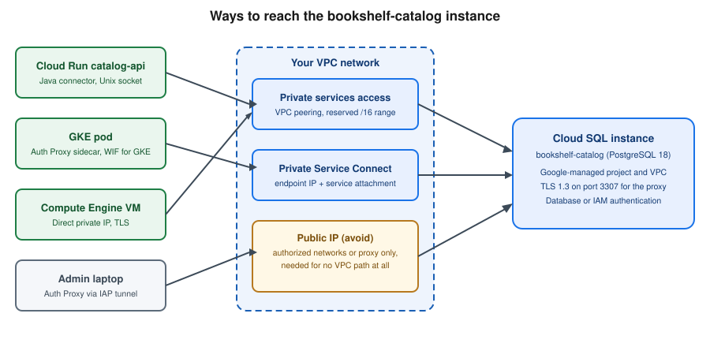

Cloud SQL
|
This content was generated with the assistance of AI and should be verified against the official documentation before being relied on in production. |
Commands and limits below are current for the gcloud CLI 586.x line (gcloud sql command group), the Cloud SQL
database versions page and release notes published through 2026-09-29, Cloud SQL Auth Proxy 2.x, the Cloud SQL Java
connectors, Spring Cloud GCP 8.x for Spring Boot 4 (7.4.x for Spring Boot 3) and Terraform hashicorp/google v8
(checked 2026-09-30); re-verify against gcloud version, gcloud sql instances create --help and the linked
reference pages before relying on them in a pipeline.
Cloud SQL is Google Cloud’s fully managed relational database service for PostgreSQL, MySQL and SQL Server.
Google operates the virtual machine, the operating system, the database engine patches, automated backups, replication
and failover; you choose the engine and version, the edition, the machine size, the network path and the schema. In
the Bookshelf scenario (see Google Cloud) Cloud SQL for PostgreSQL hosts the bookshelf-catalog
instance with a catalog database used by catalog-api. This page covers the whole life cycle of such an instance:
choosing an engine and edition, creating it from the console and the CLI, connecting to it privately and
securely, availability and recovery, extensions such as pgvector, running it from Spring Boot, cost and
troubleshooting. When a workload outgrows Cloud SQL, AlloyDB for PostgreSQL is the PostgreSQL-compatible
scale-up path; the map of every database option on Google Cloud is in
Managed Databases on Google Cloud.
Engines and versions
| Engine | Versions (at the check date) | Notes |
|---|---|---|
PostgreSQL |
18 is the default; older majors remain available until their community end of life |
The best fit for Bookshelf. Supports extensions such as |
MySQL |
8.4 is the default; 9.7 reached general availability on 2026-08-13 |
MySQL 9.7 adds vector functions. 5.7 and 8.0 are past community end of life and subject to extended support fees. |
SQL Server |
2022 and 2025 (2025 reached general availability on 2026-04-06), Standard, Enterprise, Web and Express editions |
License cost is included in the hourly price. Windows authentication works through Managed Microsoft AD. |
The authoritative list of supported versions, their end-of-life dates and the default for new instances is the
database versions and version policies page; the exact version
strings used by --database-version (for example POSTGRES_18, MYSQL_8_4, SQLSERVER_2022_STANDARD) are listed
by gcloud sql tiers list and the create reference.
- Extended support
-
When a major version passes its community end of life, Cloud SQL keeps it running only under extended support. Fees are charged automatically per vCPU-hour for instances on end-of-life major versions, starting 2025-05-01 for the versions that had already reached the end of their support window by then. Plan major version upgrades (
gcloud sql instances patch --database-version=POSTGRES_18, or the in-place upgrade in the console) well before the community date. Older guides that leave an instance on the version it was created with ignore this cost. - Other engines
-
MongoDB, Redis, Elasticsearch and the rest of the engines documented on this site are not Cloud SQL engines; see Managed Databases on Google Cloud for where each one runs on Google Cloud.
Editions and machine tiers
Cloud SQL has two editions for PostgreSQL and MySQL. SQL Server instances use Enterprise and Enterprise Plus as well.
| Enterprise | Enterprise Plus | |
|---|---|---|
Default for new instances |
Older engine versions and a deliberate choice for small or development databases |
PostgreSQL 16 and later, MySQL 8.4 and later (console and CLI default) |
Availability SLA |
99.95 percent, excluding maintenance |
99.99 percent, including maintenance |
Maintenance downtime |
Typically under a minute during the maintenance window |
Near-zero (sub-second) for most maintenance |
Point-in-time recovery log retention |
1 to 7 days |
1 to 35 days |
Data cache (local SSD read cache) |
Not available |
Available; up to several times faster reads for read-heavy working sets |
Machine families |
Shared-core ( |
Performance-optimized |
Disaster recovery and switchover |
Cross-region replicas, manual promotion |
Cross-region replicas with planned switchover and replica failover, Managed Connection Pooling, advanced DR |
Choose Enterprise for development, tests and low-traffic services where a minute of maintenance downtime is
acceptable and cost matters most; choose Enterprise Plus for production services that need the higher SLA, longer PITR
window or data cache. An edition can be changed later with gcloud sql instances patch --edition (an instance restart is
needed when the machine family changes). The exact tier names available in a region come from
gcloud sql tiers list; do not hard-code a tier from a blog post.
Derived from Introduction to Cloud SQL editions and Instance settings.
- Free trial
-
New users can create a free trial instance (30 days at the check date; see the free trial instance page). Label it and delete it afterwards.
Architecture and connection options
A Cloud SQL instance runs in a Google-managed project, not in yours. Your applications reach it through one of three network paths, and then authenticate with a database password or with IAM.

- Private services access (PSA)
-
The classic private IP: you reserve an IP range in your VPC network (for example a
/16), create a VPC peering withservicenetworking.googleapis.com, and the instance receives an address from that range. Reachable from the VPC, from peered networks only if custom routes are exported, and from on premises over VPN or Interconnect. The reserved range must not overlap your subnets or other peered services. - Private Service Connect (PSC)
-
The instance is published behind a service attachment; each consumer VPC creates a forwarding rule (an internal IP address in its own subnet) to that attachment. There is no peering and no shared IP range, overlapping address ranges are not a problem, and you control exactly which projects may connect with
--allowed-psc-projects. PSC is the better choice for many consumer projects, hub-and-spoke designs and organizations that avoid peering. - Public IP
-
Reachable from the internet, protected by authorized networks (IP allow lists) and TLS. Avoid for production. The Auth Proxy and the language connectors can reach a public IP safely because they authorize with IAM and encrypt end to end, without opening authorized networks, but a private path is simpler to defend.
A single instance can have both a public and a private address, and (for PSC) can have --no-assign-ip set so that it
has no public address at all. The organization policy constraint constraints/sql.restrictPublicIp enforces this.
Prerequisites for Bookshelf
The commands below assume a project with billing and the shell variables below. Enable the APIs once:
PROJECT_ID=$(gcloud config get-value project)
REGION=us-central1
INSTANCE=bookshelf-catalog
NETWORK=default
RUNTIME_SA="catalog-api@$PROJECT_ID.iam.gserviceaccount.com"
gcloud services enable \
sqladmin.googleapis.com \
servicenetworking.googleapis.com \
compute.googleapis.com \
secretmanager.googleapis.comDerived from Create instances and Enable and disable services.
- Roles
-
roles/cloudsql.admincreates and manages instances;roles/cloudsql.clientlets an application connect (it includescloudsql.instances.connect);roles/cloudsql.instanceUseris additionally required for IAM database authentication;roles/cloudsql.editorandroles/cloudsql.viewerare the in-between and read-only roles. Grantroles/cloudsql.clientto the runtime service account ofcatalog-api, not to people. The service accounts and role model are in Identity and Access. - Network
-
Reserve a private services access range once per VPC network:
gcloud compute addresses create google-managed-services-default \
--global --purpose=VPC_PEERING --prefix-length=16 --network="$NETWORK"
gcloud services vpc-peerings connect \
--service=servicenetworking.googleapis.com \
--ranges=google-managed-services-default \
--network="$NETWORK"Derived from Configure private services access.
The database password lives in Secret Manager as catalog-db-password, never in a command line, a YAML file or the
repository (the secrets service is described in Secret Manager and Cloud KMS):
openssl rand -base64 24 | tr -d '\n' | \
gcloud secrets create catalog-db-password --data-file=- --replication-policy=automatic
gcloud secrets add-iam-policy-binding catalog-db-password \
--member="serviceAccount:$RUNTIME_SA" --role=roles/secretmanager.secretAccessor
DB_PASSWORD=$(gcloud secrets versions access latest --secret=catalog-db-password)Derived from Create and access secrets.
The DB_PASSWORD shell variable holds the value only for the current shell session; never echo it or commit it.
Creating an instance
In the Google Cloud console
-
Select the project in the project picker and make sure the Cloud SQL Admin API is enabled (APIs & Services > Library). Cloud Shell has
gcloudalready authenticated if you prefer the CLI. -
Open Cloud SQL > Instances and choose Create instance, then Choose PostgreSQL.
-
Pick the Edition preset (Sandbox, Development or Production), which sets the edition, machine and availability defaults, then adjust Edition (Enterprise or Enterprise Plus) if needed.
-
Enter the Instance ID
bookshelf-catalog, the initial password for thepostgresuser (or generate one and store it in Secret Manager), the Database version (PostgreSQL 18) and the Regionus-central1. -
Under Zonal availability choose Multiple zones (Highly available) for production.
-
Open Show configuration options. Under Connections, clear Public IP and select Private IP, then choose the VPC network and the allocated range (or choose Private Service Connect and enter the allowed project IDs).
-
Under Data protection enable Automated backups and Point-in-time recovery, choose the retention, and enable Deletion protection. Under Flags add
cloudsql.iam_authenticationset toon. -
Choose Create instance. Provisioning takes several minutes; the Overview page shows the Connection name (
my-project-id:us-central1:bookshelf-catalog) that every connector needs.
With the gcloud CLI
gcloud sql instances create "$INSTANCE" \
--database-version=POSTGRES_18 \
--edition=ENTERPRISE_PLUS \
--tier=db-perf-optimized-N-2 \
--region="$REGION" \
--availability-type=REGIONAL \
--network="projects/$PROJECT_ID/global/networks/$NETWORK" \
--no-assign-ip \
--storage-type=SSD --storage-size=50GB --storage-auto-increase \
--enable-point-in-time-recovery \
--retained-backups-count=14 --retained-transaction-log-days=7 \
--backup-start-time=03:00 \
--retain-backups-on-delete \
--final-backup --final-backup-retention-days=30 \
--deletion-protection \
--maintenance-window-day=SUN --maintenance-window-hour=4 \
--database-flags=cloudsql.iam_authentication=on \
--insights-config-query-insights-enabled \
--labels=app=bookshelf,env=devDerived from gcloud sql instances create and Create instances.
Flag notes:
-
--editionand--tiermust be compatible: Enterprise Plus uses thedb-perf-optimized-N-*tiers. A development instance would use--edition=ENTERPRISE --tier=db-custom-1-3840(one vCPU, 3.75 GB) or a shared-core tier. -
--availability-type=REGIONALcreates a primary and a standby in two zones of the region (high availability);ZONALis a single zone. -
--no-assign-ipwith--networkgives the instance only a private address through private services access. For Private Service Connect use--enable-private-service-connect --allowed-psc-projects="$PROJECT_ID"instead of--network, and add--psc-auto-connections=network=projects/$PROJECT_ID/global/networks/$NETWORK,project=$PROJECT_IDto create the endpoint for you. -
--retain-backups-on-delete,--final-backupand--final-backup-retention-daysdecide what survivesgcloud sql instances delete(see Backups and point-in-time recovery). -
--database-flagssets engine flags; flags that need a restart are applied by restarting the instance, which is why the flag is better set at creation. -
Creating the instance fails with a
Failed to create subnetwork/peeringerror if the private services access range is missing or exhausted.
Check the result and read the connection name:
gcloud sql instances describe "$INSTANCE" \
--format='value(state,connectionName,ipAddresses[0].ipAddress,settings.edition,settings.availabilityType)'
gcloud sql instances list --format='table(name,databaseVersion,region,settings.tier,state)'Derived from gcloud sql instances describe.
Set the password of the built-in postgres administrator, then create the application database and user:
gcloud sql users set-password postgres --instance="$INSTANCE" --prompt-for-password
gcloud sql databases create catalog --instance="$INSTANCE"
gcloud sql users create catalog_app \
--instance="$INSTANCE" --password="$DB_PASSWORD"
gcloud sql databases list --instance="$INSTANCE"
gcloud sql users list --instance="$INSTANCE"Derived from Create and manage databases and Create and manage users.
The user created by gcloud sql users create is a regular role with cloudsqlsuperuser membership; grant it only the
privileges it needs with SQL (GRANT … ON …), as described in Data Control Language (DCL). The catalog schema
itself is created by Flyway or Liquibase migrations from the application, not by hand.
The same instance can be declared with the google_sql_database_instance Terraform resource; the conventions are in
Infrastructure as Code.
Connecting
Which connection method to use depends on where the client runs and on whether you prefer a library or a separate process. All of them use IAM to authorize the connection and encrypt the traffic, whatever the network path.
| Method | Use it for | Notes |
|---|---|---|
Cloud SQL Auth Proxy v2 |
Laptops, VMs, GKE sidecars, any language |
A small Go process that listens on a local port or Unix socket and opens a mutually authenticated TLS connection
to the instance. Needs |
Language connectors (Java, Python, Go, Node.js) |
Applications that can embed a library |
The same protocol as the proxy, in-process. No sidecar to run, supports automatic IAM authentication and refreshes the certificate and token for you. |
Cloud Run Cloud SQL connection |
Cloud Run services and jobs |
|
Direct private IP (with TLS) |
Workloads in the same VPC, GKE pods, VMs |
A normal PostgreSQL connection to the private address; you configure TLS and a password or IAM token yourself. |
Cloud SQL Studio |
Quick queries and administration |
A browser-based SQL editor in the console; also supports IAM authentication. |
Cloud SQL Auth Proxy
Install the proxy and run it against the instance connection name. With a private-IP instance reached from a VM or
through a tunnel, add --private-ip; with PSC add --psc.
curl -o cloud-sql-proxy \
https://storage.googleapis.com/cloud-sql-connectors/cloud-sql-proxy/v2.26.0/cloud-sql-proxy.linux.amd64
chmod +x cloud-sql-proxy
./cloud-sql-proxy --port 5432 --private-ip \
--impersonate-service-account="$RUNTIME_SA" \
"$PROJECT_ID:$REGION:$INSTANCE"In another terminal, connect with any client; the proxy provides the encryption and the IAM check, so the client
connects to 127.0.0.1 without TLS settings:
PGPASSWORD="$DB_PASSWORD" psql "host=127.0.0.1 port=5432 dbname=catalog user=catalog_app"Derived from Connect using the Cloud SQL Auth Proxy and the proxy repository. Use the latest 2.x release from the releases page rather than the version shown above.
The caller needs roles/cloudsql.client. --auto-iam-authn makes the proxy supply the caller’s IAM token instead of a
password, so psql needs only the IAM user name and no password. For a client that must not run a binary, a container
image is published as gcr.io/cloud-sql-connectors/cloud-sql-proxy. (That registry host is a separate, still-operated
image repository of the connectors team and is unrelated to the retired Container Registry for your own images, which
now live in Artifact Registry.)
Admin access to a private instance from a laptop: open an IAP TCP tunnel to a small bastion VM in the VPC (no public IP on the VM) and run the proxy on the VM, or run the proxy on the laptop over Cloud VPN or Interconnect. The IAP tunnel setup is in Identity and Access and VPN and Hybrid Connectivity.
Java connector and Spring Boot
The Java connector is the postgres-socket-factory (or mysql-socket-factory) artifact. It plugs into the JDBC URL, so
the existing HikariCP configuration needs no code change.
<dependency>
<groupId>com.google.cloud.sql</groupId>
<artifactId>postgres-socket-factory</artifactId>
</dependency>
<dependency>
<groupId>org.postgresql</groupId>
<artifactId>postgresql</artifactId>
</dependency>The version of the first dependency comes from the Google Cloud libraries-bom (or the Spring Cloud GCP BOM) imported in
the dependencyManagement section; see Developer Tools and DevOps for the BOM setup.
Spring Boot with a password from Secret Manager (injected as an environment variable by Cloud Run, a Kubernetes secret or a mounted file):
# src/main/resources/application-prod.yaml
spring:
datasource:
url: jdbc:postgresql:///${CATALOG_DB_NAME:catalog}?cloudSqlInstance=${CATALOG_INSTANCE}&socketFactory=com.google.cloud.sql.postgres.SocketFactory&ipTypes=PRIVATE
username: catalog_app
password: ${DB_PASSWORD}
hikari:
maximum-pool-size: 5
minimum-idle: 1
max-lifetime: 1500000
connection-timeout: 10000CATALOG_INSTANCE is the connection name (my-project-id:us-central1:bookshelf-catalog). ipTypes accepts PUBLIC,
PRIVATE and PSC, or a comma-separated preference list. The Hikari max-lifetime should be shorter than the
connection lifetime enforced by the connector and below any network idle timeout.
Alternatively, add the Spring Cloud GCP starter for Cloud SQL, which builds the URL from properties and handles IAM authentication:
<dependency>
<groupId>com.google.cloud</groupId>
<artifactId>spring-cloud-gcp-starter-sql-postgresql</artifactId>
</dependency>spring:
cloud:
gcp:
sql:
instance-connection-name: ${CATALOG_INSTANCE}
database-name: catalog
enable-iam-auth: true
datasource:
username: catalog-api@my-project-id.iam
hikari:
maximum-pool-size: 5With enable-iam-auth: true no password is configured; the connector exchanges the service account’s Application
Default Credentials for a short-lived token and presents it as the password (see IAM database authentication).
Derived from Cloud SQL connectors overview, the Java connector repository and Spring Cloud GCP. Property names have changed between Spring Cloud GCP major versions; check the reference of the version in your BOM.
The general Spring Boot data-source, profile and Hikari conventions are in Configuration and Profiles and Spring Data JPA; this page only shows what changes for Cloud SQL.
From Cloud Run
gcloud projects add-iam-policy-binding "$PROJECT_ID" \
--member="serviceAccount:$RUNTIME_SA" --role=roles/cloudsql.client
gcloud run services update catalog-api --region="$REGION" \
--add-cloudsql-instances="$PROJECT_ID:$REGION:$INSTANCE" \
--set-env-vars=CATALOG_INSTANCE="$PROJECT_ID:$REGION:$INSTANCE",CATALOG_DB_NAME=catalog \
--update-secrets=DB_PASSWORD=catalog-db-password:latestDerived from Connect from Cloud Run to Cloud SQL for PostgreSQL.
Cloud Run offers two paths. The Cloud SQL connection (--add-cloudsql-instances) gives a Unix socket at
/cloudsql/CONNECTION_NAME, so the JDBC URL can use the socket factory or the socket path. The second path uses
Direct VPC egress to the instance’s private IP, with the connector set to ipTypes=PRIVATE; it needs no built-in proxy
but requires the egress subnet to reach the peered range. Either way, a Cloud SQL instance accepts a limited number of
concurrent connections, so set --max-instances times the pool size below the instance’s max_connections flag. See
Cloud Run for the full deployment and
Cloud Run Scaling, Traffic and Jobs for scaling.
From GKE
On GKE (Deploying Microservices on GKE) run the Auth Proxy as a sidecar container in the pod. The
proxy authenticates through Workload Identity Federation for GKE, so no key file or secret is mounted: bind the
Kubernetes service account to the permission roles/cloudsql.client directly.
PROJECT_NUMBER=$(gcloud projects describe "$PROJECT_ID" --format='value(projectNumber)')
gcloud projects add-iam-policy-binding "$PROJECT_ID" \
--role=roles/cloudsql.client \
--member="principal://iam.googleapis.com/projects/$PROJECT_NUMBER/locations/global/workloadIdentityPools/$PROJECT_ID.svc.id.goog/subject/ns/bookshelf/sa/catalog-api" containers:
- name: app
image: us-central1-docker.pkg.dev/my-project-id/bookshelf/catalog-api:1.0.0
env:
- name: DB_URL
value: jdbc:postgresql://127.0.0.1:5432/catalog
- name: cloud-sql-proxy
image: gcr.io/cloud-sql-connectors/cloud-sql-proxy:2.26.0
args: ["--private-ip", "--structured-logs", "--port=5432", "my-project-id:us-central1:bookshelf-catalog"]
securityContext:
runAsNonRoot: trueThis fragment belongs under spec.template.spec of the catalog-api Deployment, whose pod uses the Kubernetes
service account catalog-api.
Derived from Connect from Google Kubernetes Engine and Workload Identity Federation for GKE.
The catalog-db Kubernetes secret is populated from Secret Manager (for example with the Secret Manager add-on or the
External Secrets Operator) instead of being written by hand. Use a recent Kubernetes sidecar (an init container with
restartPolicy: Always) if the proxy must start before and outlive the application container, and pin the proxy image
to a verified 2.x tag.
Databases and users
Cloud SQL distinguishes the built-in database users from IAM principals.
| User type | Created with |
|---|---|
Built-in user (password) |
|
IAM user (person) |
|
IAM service account |
|
IAM group |
|
Derived from Manage IAM users and groups.
IAM database authentication
With IAM database authentication nobody keeps a database password: the client presents an OAuth 2.0 access token, which Cloud SQL validates against IAM, and access is revoked by removing the IAM role. The steps for the Bookshelf service account are:
# 1. The instance flag was set at creation; set it on an existing instance with:
gcloud sql instances patch "$INSTANCE" --database-flags=cloudsql.iam_authentication=on
# 2. Create the database user for the runtime service account
gcloud sql users create "catalog-api@$PROJECT_ID.iam" \
--instance="$INSTANCE" --type=cloud_iam_service_account
# 3. Allow the service account to log in and connect
gcloud projects add-iam-policy-binding "$PROJECT_ID" \
--member="serviceAccount:$RUNTIME_SA" --role=roles/cloudsql.instanceUser
gcloud projects add-iam-policy-binding "$PROJECT_ID" \
--member="serviceAccount:$RUNTIME_SA" --role=roles/cloudsql.clientThen grant the database privileges inside PostgreSQL, because IAM only controls the login:
GRANT CONNECT ON DATABASE catalog TO "catalog-api@my-project-id.iam";
GRANT USAGE ON SCHEMA public TO "catalog-api@my-project-id.iam";
GRANT SELECT, INSERT, UPDATE, DELETE ON ALL TABLES IN SCHEMA public TO "catalog-api@my-project-id.iam";Derived from Log in using IAM database authentication.
Clients enable it with the connector flag enableIamAuth=true (JDBC) or with the proxy’s --auto-iam-authn. A human can
log in with gcloud sql connect "$INSTANCE" --user=alice@example.com --database=catalog after the gcloud account is
the same IAM user. IAM tokens are valid for about an hour; the connector refreshes them before a new connection is opened, so a
long-lived pooled connection continues to work until it is closed, but the pool must replace connections regularly
(max-lifetime in Hikari). Built-in users remain necessary for tools that cannot present tokens.
High availability
A regional instance (--availability-type=REGIONAL) keeps a standby in a second zone of the same region. Data is
written synchronously to a regional persistent disk, so a zone failure promotes the standby with no data loss. The
instance keeps one stable IP address and connection name, but connections are dropped and clients must reconnect;
applications need connection retries and short pool lifetimes.
# Convert an existing zonal instance to high availability
gcloud sql instances patch "$INSTANCE" --availability-type=REGIONAL
# Test a failover (a short outage, then the standby becomes the primary)
gcloud sql instances failover "$INSTANCE"Derived from High availability and Configure high availability.
High availability protects against zone failures and some maintenance, not against dropped tables, corrupt data or a regional outage. Backups and cross-region replicas cover those cases. Plan failover tests the way you plan restore tests.
Read replicas, cross-region replicas and disaster recovery
A read replica is a read-only copy kept in sync asynchronously. Use replicas to offload reporting and read-heavy queries, to place data near users in another region and to prepare disaster recovery.
# In-region read replica
gcloud sql instances create bookshelf-catalog-replica \
--master-instance-name="$INSTANCE" --region="$REGION" --tier=db-perf-optimized-N-2
# Cross-region replica
gcloud sql instances create bookshelf-catalog-replica-east \
--master-instance-name="$INSTANCE" --region=us-east1 --tier=db-perf-optimized-N-2
# Promote a replica (breaks replication: this is a one-way operation)
gcloud sql instances promote-replica bookshelf-catalog-replica-east
# Planned switchover: swaps roles without data loss (Enterprise Plus, advanced DR)
gcloud sql instances switchover bookshelf-catalog-replica-eastDerived from Create read replicas, Cross-region replicas and Perform a switchover.
Replication lag is asynchronous and shown in Cloud Monitoring (database/replication/replica_lag); reads from a
replica can be stale, so route only tolerant queries there. Promotion is for disaster recovery: after promotion the
old primary is no longer a source. With Enterprise Plus, advanced disaster recovery gives a switchover and replica
failover that keep the original topology intact (the old primary becomes a replica), so a regional drill does not
require rebuilding. A read replica has its own connection name and IP; Spring can route reads to it with a second
DataSource or a routing data source (see Spring Data JPA).
Backups and point-in-time recovery
Cloud SQL provides two layers of protection that you should both understand:
- Automated and on-demand backups
-
A daily backup in a window you choose (
--backup-start-time, in UTC), retained for a number of copies (--retained-backups-count, default 7). On-demand backups are taken withgcloud sql backups create. A backup restores to the same instance or to another one in the project. - Point-in-time recovery (PITR)
-
With PITR enabled, the write-ahead log is archived continuously, so you can recover to any second within the retention window (up to 7 days on Enterprise and 35 days on Enterprise Plus). PITR always creates a new instance by cloning; it does not rewind the source in place.
In the Google Cloud console
-
Open Cloud SQL > Instances, select
bookshelf-catalogand open Backups. -
Choose Create backup for an on-demand backup, or Manage backups to change the daily window and the retention.
-
To restore, choose a backup and Restore, then decide whether to overwrite the instance or restore to a new one.
-
For PITR open Overview and choose Clone, then Clone from an earlier point in time and enter the UTC timestamp.
With the gcloud CLI
gcloud sql backups create --instance="$INSTANCE" --description="before-schema-migration"
gcloud sql backups list --instance="$INSTANCE"
# Restore a backup into a new instance
gcloud sql backups restore BACKUP_ID \
--restore-instance=bookshelf-catalog-restored --backup-instance="$INSTANCE"
# Point-in-time recovery by cloning to a UTC timestamp
gcloud sql instances clone "$INSTANCE" bookshelf-catalog-pitr \
--point-in-time='2026-09-30T10:15:00.000Z'Derived from Overview of backups, Restore from a backup and Perform point-in-time recovery.
The timestamp is in UTC and RFC 3339 format. The cloned instance has a new connection name and IP; point a validation job at it and compare data before cutting over. Restoring over a running instance replaces its data and breaks the replicas.
- Backups retained after deletion
-
By default backups are removed with the instance. With
--retain-backups-on-deletethe automated backups are kept for their retention period, and--final-backuptakes one more backup when the instance is deleted and keeps it for--final-backup-retention-days(up to several years). These retained backups cost storage, remain visible after the instance is gone and can still be restored into a new instance, so a forgotten test instance leaves a bill behind. They also hold thesource-instance-deletion-time, which lets a deleted instance be recovered within the PITR window. The commands that list and delete them are in Clean up. - Enhanced backups
-
For compliance, Cloud SQL integrates with Backup and DR Service: backups stored in a locked backup vault in a separate project that cannot be deleted before the vault’s retention ends, with their own schedule and cross-region copies. Use them when the database must survive a compromised project, not only an operator mistake. The vault and plan model is in Block and File Storage on Google Cloud and the service’s own pages.
Extensions, vector search and flags
PostgreSQL extensions are installed per database by a user with the cloudsqlsuperuser role. The set of supported
extensions depends on the major version (see the supported
extensions page).
CREATE EXTENSION IF NOT EXISTS vector;
CREATE EXTENSION IF NOT EXISTS pg_trgm;
CREATE TABLE book_embedding (
book_id bigint PRIMARY KEY,
embedding vector(768) NOT NULL
);
CREATE INDEX book_embedding_hnsw
ON book_embedding USING hnsw (embedding vector_cosine_ops);
SELECT book_id
FROM book_embedding
ORDER BY embedding <=> '[0.01, 0.02, ...]'
LIMIT 5;Derived from Work with vector embeddings in Cloud SQL
and the pgvector documentation. The vector types, distance operators, HNSW and
IVFFlat tuning are explained in PostgreSQL & pgvector, and the comparison with other
vector stores is in Comparing Vector Databases. The vector extension keeps the
index in memory-oriented storage, so size the instance memory for the index, and consider AlloyDB with ScaNN when the
corpus becomes large. The ellipsis in the query stands for the remaining vector components, which an application
supplies as a parameter. Newer versions also offer full-text-search related extensions such as pg_textsearch; check
the extensions page for the availability on your version. MySQL 9.7 adds native vector data types and distance functions
at the SQL level; see the MySQL vector documentation for their syntax.
Database flags tune the engine without SSH access. Use gcloud sql flags list --database-version=POSTGRES_18 to see the
supported ones and gcloud sql instances patch "$INSTANCE" --database-flags=max_connections=200,log_min_duration_statement=500
to set them. The patch replaces the whole list, so always send every flag that should remain. Some flags restart the
instance.
Managed Connection Pooling
Managed Connection Pooling (Enterprise Plus, PostgreSQL) puts a pooler in front of the database, so thousands of
short-lived client connections share a smaller set of server connections without running PgBouncer yourself. Enable it
from the instance’s Connections settings in the console or with the gcloud sql instances patch pooling flags
(check gcloud sql instances patch --help for the current spelling) and connect to the pooler port documented on the
page below. Transaction pooling does not keep session state, so features such as session-level advisory locks,
SET without LOCAL and prepared statements behave differently, and the application should keep its own small
Hikari pool. This feature is the answer to a Cloud Run fleet that would otherwise exhaust max_connections.
Derived from Managed Connection Pooling.
Maintenance, monitoring and Query Insights
- Maintenance windows
-
Cloud SQL applies minor patches and OS updates in a weekly window (
--maintenance-window-day,--maintenance-window-hour, UTC). You may also set a deny period of up to 90 days to avoid maintenance during critical periods (--deny-maintenance-period-start-date,--deny-maintenance-period-end-date,--deny-maintenance-period-time). Enterprise Plus does the same with near-zero downtime. Major version upgrades are never automatic. - Query Insights
-
Shows the slowest and most frequent queries, their plans, the application tags and the resources they use, over the console’s Query insights page. Enable it at creation with
--insights-config-query-insights-enabled(add--insights-config-query-string-length,--insights-config-record-application-tagsas needed). With Spring, tags can be set through a Sqlcommenter library. - Metrics and logs
-
The instance exports CPU, memory, disk, connections and replication metrics to Cloud Monitoring, and PostgreSQL logs to Cloud Logging when flags such as
log_min_duration_statementare set. Alerts on disk utilization above 85 percent, CPU above 80 percent, replica lag and failed backups are a good baseline. The monitoring model is in Monitoring and Observability.
Derived from About maintenance, Use Query insights and Monitor instances.
Security checklist
-
Use private IP or PSC and
--no-assign-ip; enforce it withconstraints/sql.restrictPublicIp. -
Require TLS:
gcloud sql instances patch "$INSTANCE" --ssl-mode=ENCRYPTED_ONLY(orTRUSTED_CLIENT_CERTIFICATE_REQUIREDfor client certificates). -
Use IAM database authentication and
roles/cloudsql.clienton service accounts, and keep human access toroles/cloudsql.adminbehind a break-glass group. -
Store any password in Secret Manager, rotate it by adding a version, and never put it in a JDBC URL.
-
Use a customer-managed encryption key (CMEK) from Cloud KMS when the compliance regime requires it; it can only be chosen at creation. See Secret Manager and Cloud KMS.
-
Turn on deletion protection and Cloud Audit Logs data access logs for the database admin activity.
Pricing model
Cloud SQL bills vCPU and memory per hour (doubled for the standby of a regional instance, higher per vCPU on Enterprise
Plus, with the SQL Server license included), storage per GB-month (a regional instance pays for the standby too, and
auto-increase never shrinks), backup storage beyond the free allowance (retained backups keep billing after the
instance is deleted), network egress between regions and to the internet, and extended support for end-of-life major
versions. Committed use discounts apply to compute. Stopping an instance
(gcloud sql instances patch "$INSTANCE" --activation-policy=NEVER) stops compute charges, but storage and backups
keep billing, so deleting is the only way to stop all charges. Current prices are on the
pricing page; instance quotas and limits are on the
quotas and limits page.
Bookshelf catalog database end to end
This sequence takes catalog-api from nothing to a running service on a private, IAM-authenticated, regional instance:
# 1. Private range and instance (see "Creating an instance")
gcloud sql instances create "$INSTANCE" --database-version=POSTGRES_18 --edition=ENTERPRISE_PLUS \
--tier=db-perf-optimized-N-2 --region="$REGION" --availability-type=REGIONAL \
--network="projects/$PROJECT_ID/global/networks/$NETWORK" --no-assign-ip \
--enable-point-in-time-recovery --retain-backups-on-delete \
--final-backup --final-backup-retention-days=30 \
--database-flags=cloudsql.iam_authentication=on --deletion-protection
# 2. Database, IAM user and roles
gcloud sql databases create catalog --instance="$INSTANCE"
gcloud sql users create "catalog-api@$PROJECT_ID.iam" --instance="$INSTANCE" --type=cloud_iam_service_account
gcloud projects add-iam-policy-binding "$PROJECT_ID" --member="serviceAccount:$RUNTIME_SA" --role=roles/cloudsql.client
gcloud projects add-iam-policy-binding "$PROJECT_ID" --member="serviceAccount:$RUNTIME_SA" --role=roles/cloudsql.instanceUser
# 3. Deploy catalog-api with the connector and no password
gcloud run deploy catalog-api --region="$REGION" \
--image="$REGION-docker.pkg.dev/$PROJECT_ID/bookshelf/catalog-api:1.0.0" \
--service-account="$RUNTIME_SA" --no-allow-unauthenticated \
--network="$NETWORK" --subnet="$NETWORK" --vpc-egress=private-ranges-only \
--set-env-vars="SPRING_PROFILES_ACTIVE=prod,CATALOG_INSTANCE=$PROJECT_ID:$REGION:$INSTANCE,CATALOG_DB_NAME=catalog"With a password instead of IAM, mount catalog-db-password as DB_PASSWORD (see Connecting). The entities and
Spring Data repositories of catalog-api are ordinary JPA code (see Spring Data JPA);
nothing in them is specific to Cloud SQL, which is the point of a managed PostgreSQL. The SQL language itself is
covered by the SQL reference.
Troubleshooting
| Symptom | Likely cause and fix |
|---|---|
|
More connections than |
|
Missing |
|
|
|
IAM only controls login; run |
Creation fails with a peering or range error |
The private services access range is missing, too small or overlaps; allocate a new range and update the peering. |
Connection times out from a VM or Cloud Run |
No route to the private range, firewall or egress settings, or the wrong |
|
The server certificate is issued by the instance’s own CA; use the connector or proxy, or download the server CA
and set |
Instance suddenly costs more |
Storage auto-increase, extended support after an end-of-life version, or retained backups of deleted instances. |
Derived from Diagnose issues and Auth Proxy troubleshooting.
Clean up
Delete in dependency order: replicas first (a primary cannot be deleted while it has replicas), then the primary. Turn off deletion protection before deleting. Decide on purpose whether the retained and final backups should survive; for a throwaway lab, delete them as well.
gcloud sql instances delete bookshelf-catalog-replica-east --quiet
gcloud sql instances delete bookshelf-catalog-replica --quiet
gcloud sql instances delete bookshelf-catalog-restored --quiet
gcloud sql instances delete bookshelf-catalog-pitr --quiet
gcloud sql instances patch "$INSTANCE" --no-deletion-protection
gcloud sql instances delete "$INSTANCE" --quiet
# Retained and final backups outlive the instance and keep billing
gcloud sql backups list --project="$PROJECT_ID"
gcloud sql backups delete BACKUP_ID --quiet
# Secrets and network pieces created on this page
gcloud secrets delete catalog-db-password --quiet
gcloud services vpc-peerings delete --service=servicenetworking.googleapis.com --network="$NETWORK"
gcloud compute addresses delete google-managed-services-default --global --quietDerived from Delete an instance, Retained backups and gcloud sql backups delete.
Skip the commands for resources you did not create. Delete the VPC peering only when no other managed service (for example Memorystore or AlloyDB) uses the same private range. A deleted instance’s name cannot be reused for up to a week, so use a new name for a quick re-creation. Backups made by Backup and DR Service follow the vault’s retention and may not be deletable until it expires. For a throwaway project, deleting the project removes everything, with the usual 30-day recovery window (see Resource Hierarchy and Projects).
Related pages
-
Managed Databases on Google Cloud — every database option on Google Cloud and when to pick each.
-
AlloyDB for PostgreSQL — PostgreSQL-compatible scale-up with columnar engine and ScaNN.
-
Cloud Run — deploying
catalog-api, which connects to this instance. -
Deploying Microservices on GKE — running the Auth Proxy sidecar on GKE.
-
Identity and Access — service accounts, IAM roles and IAP tunnels.
-
Secret Manager and Cloud KMS — Secret Manager and CMEK for the database password.
-
SQL Reference — the SQL language reference.
-
PostgreSQL & pgvector — pgvector in depth.
-
Spring Data JPA — Spring Data JPA used by
catalog-api. -
Amazon RDS and Azure — the equivalent managed databases on AWS and Azure.